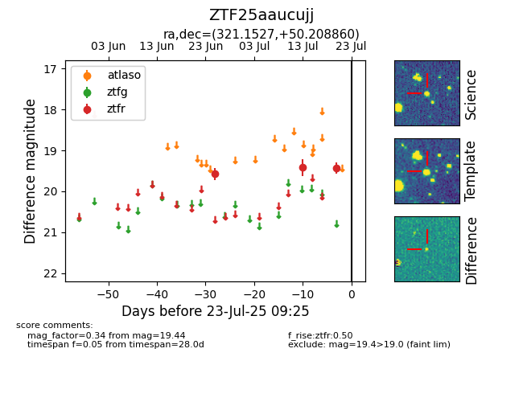

Target ZTF25aaucujj at 2025-07-23 12:37, see:
FINK: fink-portal.org/ZTF25aaucujj
Lasair: lasair-ztf.lsst.ac.uk/objects/ZTF25aaucujj
ALeRCE: alerce.online/object/ZTF25aaucujj
alt names
ZTF25aaucujj (ztf,fink)
coordinates:
equatorial (ra, dec) = (321.1527,+50.20886)
galactic (l, b) = (92.7797,-0.14859)
photometry
last ztfr=19.44
3 ztfr detections
